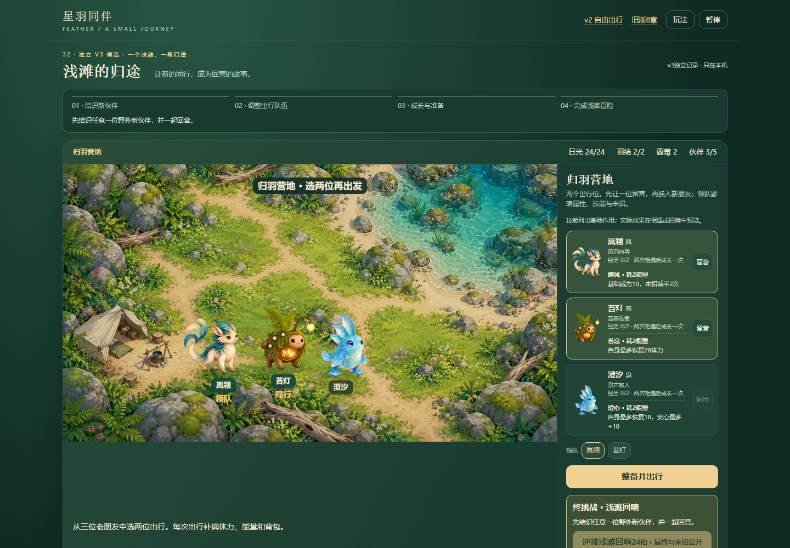
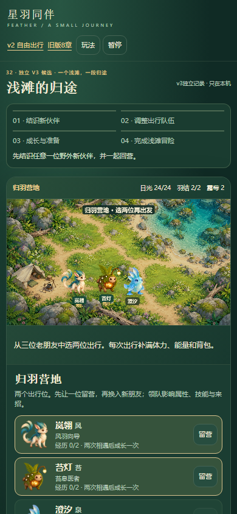
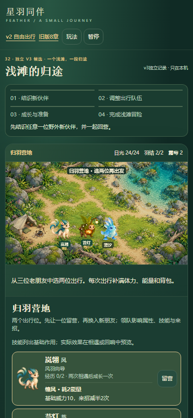
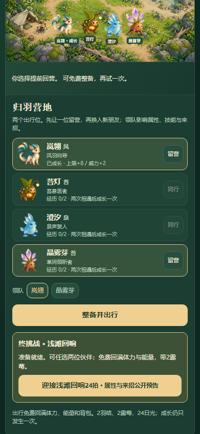
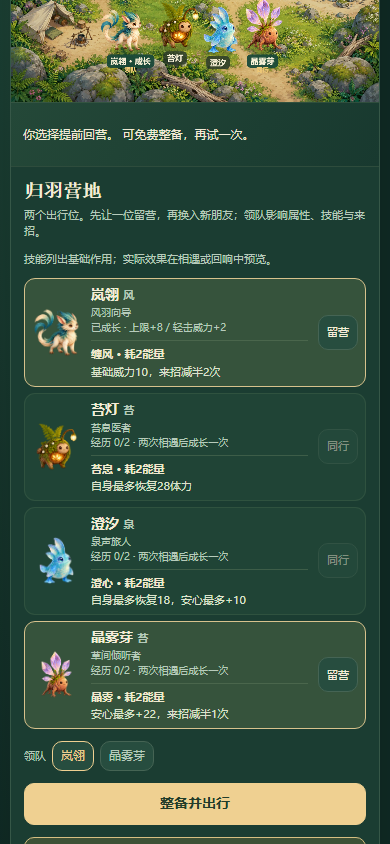
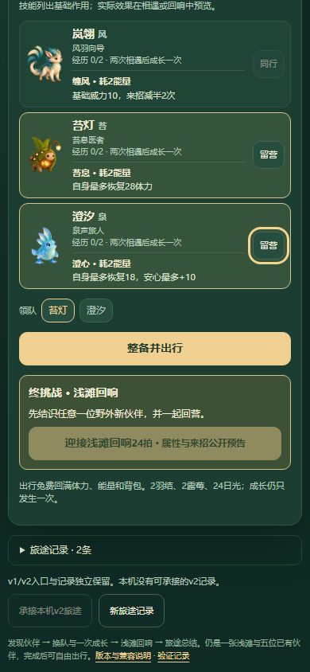
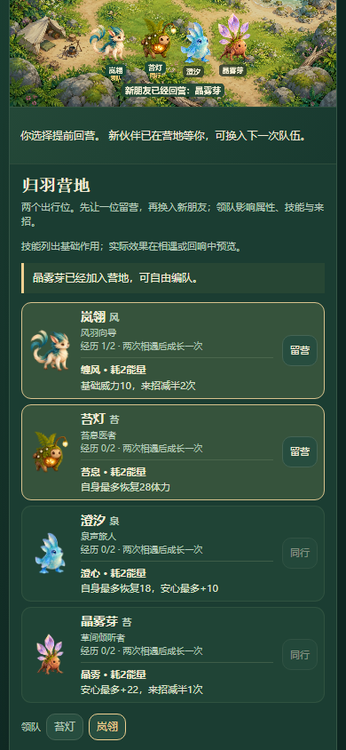

沿用原有伙伴卡片，显示技能名、固定消耗与基础作用；没有目标时不预告精确伤害。营地成长明确指轻击，原规则与存档不改。
试玩 · 范围与步骤 · 修改前普通UI · 本地双视口 · 状态与Tab顺序对比 · 16组模型fixture · 执行限制与修正 · 候选3与最短确认路径 · 覆盖索引
未重跑完整结局；露纹鳍本轮只有模型摘要核对。390 CSS不是真机/触控/性能/声音/屏幕阅读器或审美验收；辅助路线不代表自然理解。候选3仍仅源码线索。






